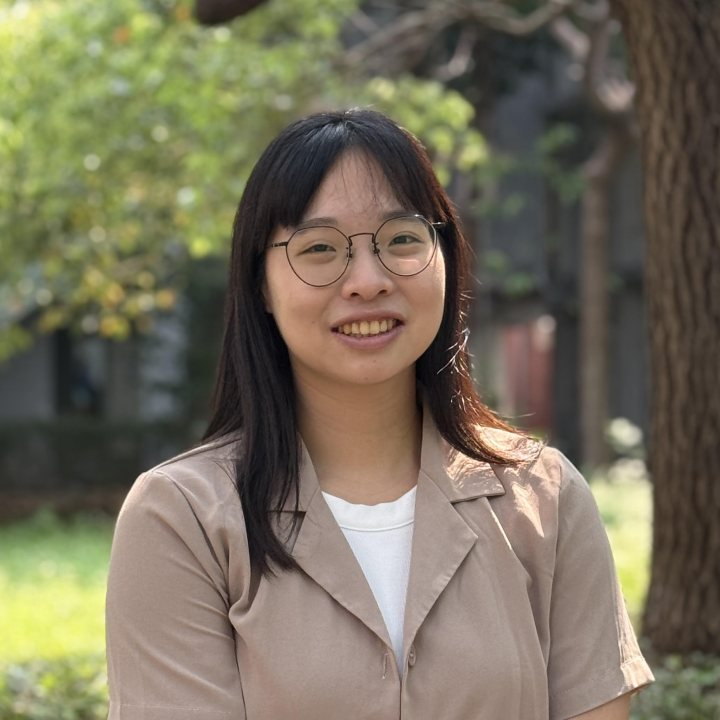

5 年多公部門財稅經歷，接著在跨境支付公司負責 USD / USDT 資金調度。我擅長找出流程裡的痛點，再和 AI 協作把它做成工具，兩套營運系統就是這樣上線的。
Five-plus years in Taiwan's public tax administration, then treasury operations at a cross-border payments company. I find the pain points in a workflow and turn them into tools with AI as my build partner; that is how two internal systems went live for the Philippines team.

Power BITableauFinTechTax · 5 yrs更早：會計師與記帳士事務所帳務專員（2018–2019）・國立高雄科技大學 財富與稅務管理系（2015–2019）
Earlier: Accounting assistant at CPA and bookkeeping firms (2018–2019) · B.B.A. in Wealth and Taxation Management, National Kaohsiung University of Science and Technology (2015–2019)
工作上解決過的問題，以及課程中的資料分析專案。點卡片可以翻面看細節。
Problems I solved on the job, plus data projects from my current program. Tap a card to flip it.
台北、混合或遠端皆可。課程 2027 年 2 月結訓，現在可以安排面談。
Based in Taipei, open to hybrid and remote. Program ends February 2027; available to interview now.
kelly.chen.ai.data@gmail.com